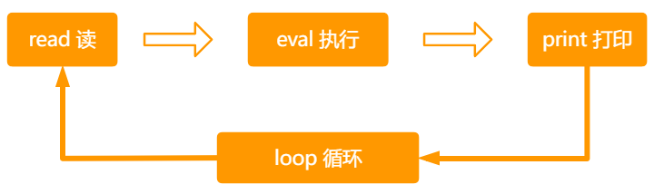
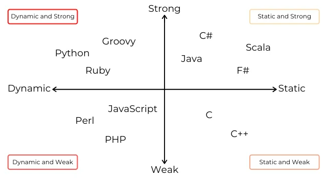

JS简介、核心语法、变量
一、js简介
- HTML、CSS、JavaScript 三者之间的关系
前端三层 语言 功能 类比1 类比 2 结构层 HTML 搭建结合、放置部件、描述语义 房子的框架 人的骨架 样式层 CSS 美化页面、实现布局 对房子装修 给人打扮、化妆 行为层 JavaScript 实现交互效果、数据收发、表单验证等 房子通水、通电 人的各种行为
- 交互效果：比如网站看到的鼠标滑动显示的下拉菜单、轮播图、选项卡等网页特效
- 数据收发：网站页面的数据，都是能通过 ajax 向后台发送请求，然后后台把数据返回给到前端，我们再把数据渲染到页面中。
- 表单验证：当我们提交一个注册表单时，会验证我们输入的邮箱、手机、密码等格式是否符合要求，这些都是通过 JS 来验证的。
- JavaScript 发展史
布兰登.艾奇 (Brendan Eich) JavaScript 创始人， 人称 JS 之父
JavaScript 创建背景
- 1995 年 34 岁的系统程序员 Brendan Eich，任职于网景公司（Netscape ，美国一家专注浏览器的公司）
JavaScript当时开发的目的，处理用户在浏览器端的输入验证（常说的表单验证）- 布兰登.艾奇，仅用 10 天时间就把 JavaScript 设计出来了 😃
JavaScript的前身叫LiveScript，后面改名为JavaScript
Java 与 JavaScript 的关系 ？
本质上是没有任何关系，就好像老婆与老婆饼的关系，雷锋与雷峰塔的关系。
JavaScript 的早期设计思路
- 借鉴 C 语言的基本语法
- 借鉴 Java 语言的数据类型和内存管理
- 借鉴 Scheme 语言，将函数提升到”第一等公民”(first class)的地位
- 借鉴 Self 语言，使用基于原型(prototype)的继承机制
所以，JavaScript 语言实际上是两种语言风格的混合产物 -（简化的）函数式编程 +（简化的）面向对象编程
JavaScript 的地位
- JavaScript 垄断了浏览器端脚本语言，绝对唯一的霸主
在这之前其实有三种脚本语言 VBScript 、JScrip、JavaScript 。随着时间的推移，有两种被淘汰了，只剩下 JavaScript
- 任何做浏览器端开发的工程师都不可能绕开 JavaScript
- js 现在能做什么？
- 表单动态校验（密码强度检测）js 产生的最初目的
- 网页特效
- 服务端开发 Node.js (Node.js 是 JS 的一个运行平台)
- 桌面程序(Electron)
- APP(Cordova)
- 游戏开发(cocos2d-js)
- 前端 与 后端
如何理解前端（客户端）
- 所谓前端（客户端），其本质就是直接面向用户的那一端。
- 前端主要是用来：处理界面，交互逻辑，用户能看见的东西，是我们前端开发要解决的问题
- 前端开发的主要编程语言：HTML、CSS、JavaScript
如何理解后端（服务端） - 后端主要是用来：操作数据库，实现数据的增删改查，处理数据。
- 后端开发主要的编程语言：Java、Python、PHP、C/C++、GO
- 前端和后端通过 HTTP 协议进行传输
JavaScript 是一种前端开发语言，为什么他现在可以做服务端开发 ？
在 2009 年，JavaScript 诞生了一个著名的平台NodeJS。NodeJS 就是 JavaScript 的一个运行平台，NodeJS 的诞生，让 JS 的触角延伸到了服务器端。 也就是说随着 NodeJS 的诞生，JS 也可以操作数据库了，也就可以做服务端开发。
- ECMAScript 与 JavaScript 的关系
- 1996 年 11 月，网景公司将 JavaScript 提交给欧洲计算机制造商协会（ECMA）进行标准化。
- 1997 年，欧洲计算机制造商协会（ECMA）设置了 JavaScript 的标准，命名为 ECMAScript
JavaScript 有 ECMAScript 的关系
- JavaScript 是语言，ECMAScript 是标准
- JavaScript 实现了 ECMAScript 标准，而 ECMAScript 标准规范了 JavaScript
- JavaScript 知识体系
- 语言核心（ECMAScript5）
- DOM （Document Object Model）文档对象模型
- BOM （Browser Object Model）浏览器对象模型
语言核心（ECMAScript5）
- 我们接下来要学习的 JS 语言核心，就是ECMAScript5中的标准，标准中规定了语言的
- 基本语法
- 类型
- 语句
- 关键字
- 保留字
- 操作符
- 全局对象
学习完这个后，才会再学习后面的 ECMAScript6、7、8、9….13
- ES6 对应的是 ECMAScript2015( ES2015）改动最多，主要是让 JS 工程化，构建化，所以我们常把 ES6 之后的归到 ES6。
- 其它不同版本间的对应关系如下
- ES7（ES2016）、ES8（ES2017）、ES9（ES2018）、ES10（ES2019）、ES11（ES2020）、ES12（ES2021）、ES13（ES2022）
DOM（Document Object Model）文档对象模型
DOM 将整个页面抽象为一组分层节点（DOM 树），开发者可以通过操作 DOM 树来随心所欲的控制网页的内容和结构和样式。
我们常见的网页特效，就是通过 JS 来操作 DOM 实现的
- Document文档，表示的就是整个HTML网页文档
- Object对象，表示将网页中的每一个部分都转换为一个对象
- Model模型，表示对象之间的关系，这样方便我们获取对象。
BOM（Browser Object Model）浏览器对象模型
- BOM 用于支持访问和操作浏览器的窗口，JS 通过操作 BOM，可以获取窗口的大小，窗口输入的地址，控制前进和后退，监听窗口大小的改变等
- JavaScript 为何称为脚本语言
- 所谓的脚本语言：是指不需要提前编译，运行的过程中边编译，边执行。
- JS 本质上就是在运行过程中边编译，边执行的，JS 是由 JS 解释器（JS 引擎）来逐行进行解释并执行
什么是 JS 解释器 ？
这就需要我们了解浏览器的两大组成部分：渲染引擎 和 JavaScript 引擎
- 渲染引擎：用来解析 HTML 与 CSS，俗称内核，比如 chrome 浏览器的 blink，老版本的 webkit
- JS 引擎： 也称为 JS 解释器，用来读取网页中的 JavaScript 代码，对其处理后运行。比如 chrome 浏览器的 V8 引擎。
浏览器本身并不会执行 JS 代码，而是通过内置 JavaScript 引擎（解释器）来编译和执行 JS 代码。JS 引擎执行代码时逐行解释每一句源码（转换为机器语言），然后由计算机去执行。
二、javascript基础语法
- 书写位置
行内式
- 直接写在标签上，有点类似行内样式，这种写法基本不用，只做了解。
<div onclick="alert('主人，你好');">点我</div> <a href="JavaScript:;">禁止页面刷新</a>
内部js
- JS 代码直接写在写在之间的文本内容，在浏览器中要转换为 js 脚本执行，现在可以省略不写。
外部js
- 把 js 代码，单独保存在一个 js 文件中
- 通过
<script>标签的 src 属性来加载 js 文件<script>标签可以写在 head 或 body 标签中- 如果采用了外部 JS 的写法，则
<script>标签中，不能再写 JS 代码，写了也不会生效<!--错误写法，如果src属性中引入了外部js文件，则<script>标签不能再写js代码--> <script src="js/demo.js"> alert('错误写法，弹窗不会弹出'); </script>
注意1：在实际的开发中，我们常用的就是外部 JS 这种写法，因为他有很多优点
优点：
结构彻底分离
多页面可以进行复用
后期好维护修改
浏览器可以根据特定的设置缓存所有外部 JS 文件，所以多个页面都用到同一个文件，那么这个文件只需要下载一次，页面加载速度更快。如果后续再打开网页，浏览器会直接从缓存中读取。
唯一缺点：
- 增加请求数（外部文件），但相对上面的优点，完全可以忽略不计。
提示：html文件是不会被缓存的！但css和js文件会被缓存，如果做了修改，就得重命名才能重新加载
注意2：Javascrip 文件不能脱离 HTML 网页运行，只有在后面学到 Node.JS 时，JS 可以在 NodeJS 平台上独立运行。
- JS 注释
单行注释：
// ……- 快捷键：
ctrl+/
多行注释：/* */- 快捷键
Alt + shift + a
JavaScript 中的注意事项
- 严格区分大小写
- 语句字符都要是英文状态下（字符串可以使用任意字符）
- 每条语句以分号（;）结尾
- 如果不写分号，意味着由解析器来确定语句在哪里结尾。
- 加分号有助于在某些情况下提升性能，因为解析器会尝试在合适的位置补上分号以纠正语法错误
- 如果不加分号，在后期压缩代码时，有可能会造成语法错误
- 而且有些时候，浏览器会加错分号，所以在开发中分号必须写
- JS 中会忽略多个空格和换行
- 可以利用空格和换行，对代码进行格式化，这样写出来的代码更美观
JS 中的输入输出语句
alert('弹窗')
- alert() 语句，会在页面打开时，弹出弹窗
- alert()语句，会阻止程序的执行，他会在此代码执行确认后，才会接着执行后面的代码
- 可以用来调式代码
console.log('控制台输出内容')
- 浏览器控制台打印输出信息
- 他不会打断程序运行
- 常用来调试代码
- 可以一次打印多条内容，每条内容间用
,逗号隔开
prompt('提示用户输入信息')
- 浏览器弹出输入框，用户输入内容
alert、console.log和prompt中，如果输入的是数字、已声明的变量，则不用加引号；如果输入的是字符串，则要加上''单引号或""双引号包裹。
三、javascript变量与字面量
- 硬盘、内存、CPU 三者关系
硬盘，内存，CPU 三者各自的作用
名称 作用 硬盘 负责程序和数据的永久存储，断电数据不丢失的特点 内存 负责连接CPU和硬盘；存储临时使用的数据;保存从硬盘读取的数据，提供给 CPU 使用；保存 CPU 的一些临时执行结果，以便 CPU 下次使用或保存到硬盘；断电数据就会清空，丢失 CPU 运行总指挥，负责发指令，数据处理与计算
他们三者之间如何工作的？
当我们要运行某个程序时：
- CPU首先接受到我们的命令，
- 然后它(CPU)告诉硬盘：我要运行存储在你那的程序，你把该程序送到内存去
- CPU对内存说，我让硬盘把程序送到你这里来了，你保存一下。
- 等该程序被完整的送到内存之后。CPU就开始执行程序，可以进行一系列操作
- 当我们在编辑文档等程序时，如果没有
ctrl+s，那么此时编辑的数据是存储在内存的，只有ctrl+s后才会保存到硬盘- 因此，没有
ctrl+s的数据，一旦断电就无法恢复，因为内存只能临时存储数据
CPU 可以直接从硬盘中读取数据，为什么要在中间加一个内存呢？
- 因为CPU的处理速度特别快，而硬盘的读取和存储数据的速度特别的慢
- 如果直接从硬盘读数据，而硬盘的速度跟上不 CPU 的速度，就会对 CPU 造成很大的浪费，同时我们操作电脑时，就会很卡。
- 而内存的数据就很快了，他可以跟上 CPU 的处理速度。
- 内存就是为了解决 cpu 和硬盘之间速度不匹配的冲突，内存是由电流实现的存取速度，相当快，不过断电就丢失。
总结
| 名称 | 作用 | 速度 | 类比 |
|---|---|---|---|
| 硬盘 | 负责程序和数据的永久存储，断电数据不丢失的特点 | 很慢 | 大仓库 |
| 内存 | 负责连接CPU和硬盘；存储临时使用的数据；断电数据就会清空，丢失 | 很快，几乎硬盘的 100 倍 | 中转站 |
| CPU | 运行总指挥，负责发指令，数据处理与计算 | 很快，几乎硬盘的 100 倍 | 车间 |
CPU，内存 决定你电脑运行的快慢，硬盘决定你可以放东西的多少 ！
什么是变量
- 大白话：变量就是一个用来装东西的盒子，再往深里说，他就是用来存放数据的容器。
- 变量的本质： 变量是程序在内存中申请的一块用来存放数据的空间。
如何声明变量
- 在 js 中，使用
var关键词来声明一个变量 - a是自定义的变量名
- 使用 var 关键字声明变量后，计算机会自动为变量分配内存空间，用来存储变量的值
- 变量声明后，就可以给变量赋值，
=等号表示赋值
var a; a="小米"- 通过变量名就可以访问变量在内存中存储的值。
- 赋值后我们就可以使用他了，我们可以在控制台通过输出语句输出变量 a 的值
console.log(a);- 在 js 中，使用
变量的初始化
我们在声明一个变量的同时为其赋值，称为变量的初始化
var a="张三"; concole.log(a);更新变量的值
- 一个变量被重新赋值后，他之前的值就会被覆盖
var name = "张三"; // 给变量name 重新赋值 name = "李四"; console.log(name);同时声明多个变量
先声明后赋值：var x,y,x; x=1; y=2; z=3; console.log(x,y,z);
声明的同时赋值
var x=1, y=2, z=3; console.log(x,y,z);
声明过程可赋值，可不赋值
var x, y = 1, z = 4; //在声明之后为x赋值 x = 2; console.log(x, y, z);
声明变量的几种特殊情况
- 声明变量，但没有赋值，默认值为
undefined我们后期如果要判断一个变量是否成功赋值，我们就可以通过检测他的值是否是 undefined 来判断
- 不声明变量,直接进行赋值
<script> x = 7; // 控制台输出得到的结果是 7 console.log(x); </script>这是 js 的一个语法特性，只需要了解就好，在实际开发中非常不推荐这样写。
- 直接输出一个不存在的变量
<script> // 控制台**会报错** z is not defined console.log(z); </script>- 声明变量，但没有赋值，默认值为
变量的命名（标识符）
变量的命名必需要遵守一定的规则。
- 标识符：在 js 中所有可以由我们自主命名的都可以称为标识符
标识符的命名规则
- 只能由字母，数字，_下划线，$组成，但不能以数字开头
- 严格区分大小写，a 和 A 是两个不同的变量
- 不能使用关键字或保留字做为变量名
关键字和保留字
- 关键字：就是 JavaScript 语言本身已经使用的一些单词。这些单词具有特定的用途，用户自定义的标识符（名字）不能与关键字相同 。
- 保留字：就是 JavaScript 语本身没有使用，但是考虑后期随之着 JS 的发展，可能会使用的一些单词。这些单词建议用户不要使用。
- 以下是部分关键字和保留字：
abstract arguments boolean break byte case catch char class* const continue debugger default delete do double else enum* eval export* extends* false final finally float for function goto if implements import* in instanceof int interface let long native new null package private protected public return short static super* switch synchronized this throw throws transient true try typeof var void volatile while with yield eval arguments
- 推荐两种优秀的命名法
驼峰命名（最推荐）- 首个单词小写，其余每个单词开头字母大写
myFirstName 、myStudentCount 、getBoxColor、navList不建议使用全小写 myfirstname，可读性差
- 首个单词小写，其余每个单词开头字母大写
C 语言风格
- 所有单词全小写，单词之间用_下划线分隔
my_first_name 、 my_student_count
匈牙利命名法（了解即可）
- 基本原则是：变量名=属性+类型+对象描述
// i 提示变量类型为 整型 iMyStudentCount;
- 字面量
可以理解为不可能发生改变的(固定)值。他就是他的字面意思。
<script> var A = 1; var A = "我爱你"; var A = "优秀"; </script>- 源代码解读
- 上面代码中，1，'我爱你'，'优秀' 就是字面量。
- A 是变量，A 可以表示 1，也可以表示'我爱你'，还可以表示'优秀'。
- 在实际开发中，我们都是通过变量来保存一个字面量，然后只需要在每次用到字面量的地方，调用下该变量就好
- 源代码解读
四、综合案例
弹出用户输入的信息
需求：
- 当用户打开浏览器时，弹出输入框，要求用户输入姓名，点击确认后，以弹窗形式，显示用户的姓名。
实现思路： - 使用 prompt() 函数弹出输入框，让用户输入内容
- 要通过变量来接受 prompt() 函数的返回值
- 通过 alert()函数，显示结果
- 当用户打开浏览器时，弹出输入框，要求用户输入姓名，点击确认后，以弹窗形式，显示用户的姓名。
如何交换两变量的值
需求：
- 定义两个变量同时赋值，然后交换两个变量中的值。
实现思路： - 这里我们可以用现实生活中的例子来解答这道题
- 首先定义两个变量 apple 和 pear，然后分别赋值"苹果"和"梨子"
- 我们把这两个变量想像成两个盘子，变量的值，想像成盘子中放入了苹果和梨子。
- 现在的需求就是要把苹果放到 pear 盘中去，把梨子放到苹果盘子中去。
- 所以我们需要再借助第三个盘子，再声明一个变量 desk，不赋值。相当于空盘子
- 然后把苹果放到空盘子中 desk 中，再把梨子放到苹果盘中，再把 desk 盘中的苹果放到梨子盘中，就 ok 了
- 定义两个变量同时赋值，然后交换两个变量中的值。
五、处理报错和REPL环境
处理报错
在初学 JS 的时候，我们经常会写错代码，造成控制台报错，初学者经常会遇到以下两种常见错误
- Uncaught SyntaxError：未捕获的语法错误,
- 常见的是使用了中文符号
- Uncaught ReferenceError：引用错误
- 常见的是：误把字符串当变量用，或找不到变量，变量未定义
- Uncaught SyntaxError：未捕获的语法错误,
REPL 执行环境
- REPL(Read-Eval-Print-Loop)：交互式解析器
- 在 REPL 环境下，可以定义和运行变量、函数、对象
console控制台其实也是一个 REPL 环境，可以使用它临时测试表达式的值
在控制台书写代码后，按回车，就会进入上面四个流程：
- 先读取代码，再执行，执行后把结果打印出来，然后又可以重复刚才的动作。
- 接着在控制台书写代码，然后回车，又会进入上面四个流程
JS数据类型和类型转换
一、数据类型简介和检测
为什么需要数据类型
- 程序需要处理大量的不同数据，如果用同一种方式处理那肯定是处理不了的。所以在计算机中同样需要将数据分成不同类型，然后用不同的方式来处理和计算。
- 数据类型背后，隐藏的是编译器或者解释器对数据处理方式的定义。把数据分成不同的数据类型，然后用使用不同的处理方式
JS 中数据类型的分类
7 种基本数据类型（值类型）
- String 字符串类型
- Number 数字类型
- Boolean 布尔类型
- Null 类型
- Undefined 未定义
- Symbol 符号
- BigInt 任意精度的整数
引用数据类型（对象类型） - 对象（Object）、数组（Array）、函数（Function）
- 还有两个特殊的对象：正则（RegExp）和日期（Date）。
变量的类型
- 在 JS 中，变量的数据类型是由变量中存储的值的数据类型来决定的。
- 同时 JS 是一种弱类型的语言，他不用提前声明变量的类型。
- 代码运行时，变量的数据类型是由JS引擎根据=右边变量的数据类型来判断的。
- 运行完毕之后，变量就确定了数据类型。
- 也就是说相同的变量在不同的时刻可以是不同的类型。
<script> var a = "小明"; // 此时a是 string字符串类型 a = 23; // 此时a就是 number 数字类型 a = true; // 此时a就是 boolean布尔型 </script>typeof 操作符
typeof检测返回值的类型，然后console.log把值的类型在控制台输出。- JS 有很多种数据类型，我们需要有一种手段来确定变量的数据类型，那么
typeof运算符就可以做到。 - 使用 typeof 运算符可以检测值或者变量的类型。
- 用法：
- 检测值类型 typeof 值; 或 typeof(值)
- 检测变量类型 typeof 变量名; 或 typeof(变量名)
- 如果 typeof 标测的是一个表达式，则一定要带上括号,如 typeof(2+'2');
//值类型 console.log(typeof 1); // number console.log(typeof "艾编程"); // string console.log(typeof (2 + "2")); // string //变量类型 var a = 1, b = "艾编程"; console.log(typeof a); // number console.log(typeof b); // string注意区分变量和值：变量是不能用' '单引号或"" 双引号包裹的，用
''或“”包裹的是字符串- typeof的返回值类型是字符串类型
console.log(typeof typeof 1); // string console.log(typeof typeof 小米 );//string //注意： var obj = null; console.log(typeof typeof obj); // string- 只要是通过输入框得到的值，typeof类型都是
string字符串类型
<script> var age = prompt("请输入你的年龄"); // 用户输入 18 console.log(typeof age); </script>- JS 有很多种数据类型，我们需要有一种手段来确定变量的数据类型，那么
二、5种基本数据类型
在接下的数据类型学习中，我们主要学习Number、String、Boolean、null、undefined 的 5 种基础数据类型
关于BigInt和Symbol在后面的 ES6 中，我们再来学习。
Number 数字类型
什么是 Number 数字类型
- 所有数字都是 Number 类型，包括整数（正负数）和浮点数（小数）；
- 在表达小于 1 的数时，小数点前面的 0 可以去掉，比如 0.2可以写成.2
不同进制的数字
不同进制在线转换工具：https://tool.lu/hexconvert/
二进制数
- 二进制数以
0b开头- 二进制数字序列范围 0-1，逢 2 进 1
八进制数
- 八进制数值以
0开头- 八进制数字序列范围 0-7 ,逢 8 进 1
十六进制数
- 十六进制数以
0x开头- 十六进制序列范围 0-9 以及 A-F
科学记数法
- 对于非常大或非常小的数，我们可以用科学记数法来表示
e7表示10的 7 次方，小数点向右移动 7 个点的位置e-7表示0.1的 7 次方，小数点向左移动 7 个点的位置
数字中最大值和最小值
- 由于内存的限制，js 中不支持表示这个世界上所有数值。js 中能表示的
- 最小数保存在
Number.MIN_VALUE中- 最大数保存在
Number.MAX_VALUE中
正无穷和负无穷大
- 因为计算机内存限制，js 中不支持表示这个世界上所有数值。
- 如果计算的数值超出了 js 能表示正数范围，则会以
Infinity正无穷表示- 如果计算的数值超出了 js 能表示负数范围，则以
-Infinity负无穷表示非零数字除以
0时，结果是infinity或-infinity
- NaN
- NaN(Not a number) 不是一个数字
- NaN 用 typeof 检测，得到的结果是 number，说明 NaN 是一个数字类型
- 可以理解为 NaN 不是数字的数字类型
NaN 的作用
- NaN 表示本来要返回的数值操作失败了
- 两个数值做运算，如果操作失败了，就会返回 NaN，而不是抛出错误
- 用 0 除任意数值在其他语言中通常都会导致错误，从而中止代码执行。但是在 js 中，不会，而是返回 NaN
关于 NaN 的运算
- 0 除以 0 的结果是 NaN
- 在数学运算中，如果得不到数字的结果，其结果往往是 NaN。
- 任何数与 NaN 做运算，都会得到 NaN，除了与字符串拼接。
<script> console.log(NaN + true + "false"); //NaN+true=NaN,NaN+字符串即拼接 //结果为"NaNfalse",typeof为string //字符串与任何类型拼接，得到的都是字符串类型 </script>
- NaN 自己不与自己相等
script> var a = 0 / 0;// NaN var b = "a" - "b";// NaN var d = NaN + 1;// NaN var str = NaN + "1";//'NaN1' console.log(a, b, c, d, str); console.log(NaN == NaN); // false </script>
isNaN()
- 这个函数接收一个参数，可以是任意数据类型，然后判断这个参数是否“不是数值”
- isNaN 会尝试把它个值转换为数值，如果转换成数值字成功，也会认为是数字，则结果也是 false
特别注意：isNaN 并不是用来判断这个参数是不是NaN这个值
isNaN(NAN)结果是true- 如果参数是数值，则返回 false，否则返回 true
console.log(isNaN(1)); // false 1是一个数字，所以返回false假的 //特别注意："1"原本是字符串，但被转换成了数字 console.log(isNaN("1")); // false '1'被转成数字1，所以返回false
String字符串类型
- 符串就是 "人类的自然语言"
- 字符串要用引号包裹，双引号或者单引号均可
分清数字和字符串
- 数字11和字符串'11'在语义上是不同的，前者表达一个数量，后者是一个文本
双引号 与 单引号嵌套
- 双引号里面可以嵌套''单引号，单引号也可以嵌套""双引号
- 但双引号里不能直接嵌套双引号，单引号里也不能直接嵌套单引号
- 单引号或双引号，在匹配的时候，都是以就近原则来进行匹配的
- 推荐使用单引号内嵌套双引号
转义字符
如果需要在字符串中使用特殊字符，可以用转义符 \ 转义
转义符 解释说明 \n换行符， n 是 newline 的意思 \\反斜杠 \\"'单引号\""双引号\ttab 缩进 字符串的拼接
+号，可以用来拼接两个 或 多个字符串- 字符串与任何类型拼接，得到的都是字符串
- 字符串与变量拼接时，变量不能添加引号
空字符串
- 空字符串，直按书写空的 ''单引号 或 ""双引号 表示空字符串
- 空字符中的空格会占一个字符
- 空字符串有什么用 ？
- 可以用来转换数据类型
- 可以提前预设变量保存值为字符串类型，如果不设置为
''，有可能会出现错误的结果
length 属性
- 通过 length 属性，可以获取整个字符串的长度
<script> var str = "我就是我，不一样的花朵"; console.log(str.length); // 11 </script>
Boolean类型
- 布尔值主要是用来做逻辑判断
- 布尔类型只有两个值：true(真)和false（假），没有引号
- 如果给true和false加上
""双引号或''单引号，那就变成了字符串了
null 空类型
- null 类型只有一个值，就是
null- null 表示一个空对象指针
- 用typeof检测 null 的类型，得到的是
Object
虽然 typeof null 得到值为 Object,但是 null 是基本数据类型，这是一个历史遗留问题，如果要深究，那就只能用下面这段话来解释 (以下内容来自：你不知道的 JavaScript 上卷-103 页)
- 不同的对象在底层都表示为二进制，在 JavaScript 中二进制前三位都为 0 的话会被判断为 object 类型
- null 的二进制表示是全 0，自然前三位也是 0，所以执行 typeof 时会返回 "object"
面试中会问到这个点，问这个问题的本质不是考这个点，因为没有意义，而是想通过这个点，看你平时学习是否研究底层，会阅读相关 JS 书籍。
null 的作用
- 如果一个变量被声明后，将来是用来保存对象值的，那建议用 null 来初始化，不要使用其他值。
- 当我们需要将对象、数组、事件监听进行销毁时，我们就可以把他们设置为 null，只有把他们设置为 null 时，JS 垃圾回收器才会把他们当成垃圾，进行垃圾回收
undefined
- undefined 类型，只有一个值，就是undefined
- 当声明一个变量，但是并不给变量赋值时，它的值就是
undefined<script> var a; console.log(a); // a的值是undefined console.log(typeof a); // 变量a的类型是 undefined </script>我们经常在调试中或报错中会发现有些值打印是 undefined，就说明这个变量定义了，没有赋值，或赋值不成功。
三、数据类型转换
- JavaScript 是一种动态类型语言(dynamically typed language)。
- 这意味着你在声明变量时可以不必指定数据类型，而数据类型会在代码执行时会根据需要自动转换。
- JS 中通常会有三种方式的数据类型转换
- 其它类型 --> 数值
- 其它类型 --> 字符串
- 其它类型 --> 布尔值
其它类型转换为数字型
将其它数据类型转换为数字型，有以下 4 种方法
函数 说明 实例 Number()函数 强制转换 将非数字类型转换成数字 Number(''); // 0 或 Number(' '); // 0 paresInt() 函数 将字符串转换为数字 parseInt('ab123'); // NaN 或 parseInt('200px'); // 200 parseFloat() 函数 将字符串转换为浮点数 parseFloat('3.14 元'); // 3.14 或 parseFloat('圆周率 3.14'); // NaN （+ - * /） JS 隐式转换 利用算术运算隐式转换为数字型 -
Number 函数
Number()函数：用来将非数字类型转换成数字。
- ''空字符串会转换成数字0
- 只有前后包含：空格、纯数字类字符串、2 进制或 16 进制表示的数字、科学记数表示法的字符串能转换成数字
- 其它会转换成
NaN - 以上规则，只针对基本数据类型而言
- Number([]) 结果是 0
- Number({})结果是 NaN
<script> Number("-12"); // -12 Number("2e3"); // 2000 Number("0b11"); // 3 Number("2021年"); // NaN Number(""); // 0 Number(" "); // 0 Number(true); // 1 Number(false); // 0 Number(null); // 0 Number(undefined); // NaN </script>parseInt(函数)
- parseInt()函数，主要是将字符串类型转换为整数数字
- 转换规则
- 从第一个非空字符开始转换，如果第一个字符不是数值、加号或减号，parseInt 立即返回
NaN - 这就意味着空字符串也会返回
NaN。 - 如果第一个非空字符是数值、加号、减号，则继续检测，直到字符串末尾，或碰到非数值字符，就停止。
- 从第一个非空字符开始转换，如果第一个字符不是数值、加号或减号，parseInt 立即返回
- parseInt() 函数，不能识别二进制，八进制，但是他可以识别十六进制
- parseInt() 函数，还有第二个参数，可以指定以什么进制数来进行转换parseInt() 函数,指定之后就可以进行转换,但仍然识别不了二、八进制
<script> parseInt("0b10"); // 0 parseInt("0110"); // 110 parseInt("0x14"); // 20 parseInt("0x14年"); // 20 parseInt("2.3" + "3.5");//2 parseInt("10", 2); // 2 parseInt("10", 8); // 8 parseInt("10", 10); // 10 parseInt("0b1001",2)//0 </script>parseFloat(函数)
- 他的转换原则 和 parseInt()函数一样，唯一两点区别在于：
- parseFloat() 函数，主要是将字符串类型转换为浮点数
- parseFloat( )函数，他不能识别进制数
<script> parseFloat(""); // NaN parseFloat("3.14"); // 3.14 parseFloat("3.2.32"); // 3.2 parseFloat("3.14元"); // 3.14 parseFloat("圆周率3.14"); // NaN parseFloat("0b10"); // 0 parseFloat("0110"); // 110 parseFloat("0x14"); // 0 </script>- 他的转换原则 和 parseInt()函数一样，唯一两点区别在于：
JS 隐式转换 (+ - * /)
- 利用算术运算隐式将其它类型转换为数字
- 在单个字符串前面加上 +号，可以将字符串转成数字,多个字符串，是字符串拼接
typeof +"1"; // number
其它类型转换为字符串
| 方法或函数 | 说明 | 实例 |
|---|---|---|
| String()函数 强制转换 | 其它类型转换字符串 | String(0b10); // '2' 或 String(NaN); // 'NaN' |
| toString() 方法 | 数字和boolean类型转换为字符串 0b10.toString(); // '2' 或 NaN.toString(); // 'NaN' | |
| + '' 空字符串拼接 | 所有类型与''空字符串拼接得到的都是字符串类型。 | typeof (1 + ""); // 'string' |
以上方法或函数，将任何类型转换为字符串，都会转换成长得相同的字符串，除了科学记数法和非10进制数字会将其转换为 10 进制值的字符串
- String()函数
数字转换字符串<script> String(123); // '123' String(2.14); // '2.14' String(2e4); // '20000' String(0b10); // '2' String(NaN); // 'NaN' String(Infinity); //' Infinity' </script> >```
布尔值转换为字符串
<script> String(true); // 'true' String(false); // 'false' </script>
undefined 和 null 转换为字符串
<script> String(undefined); // 'undefined' String(null); // 'null' </script>
- toString() 方法
数字转换为字符串<script> (123).toString(); // '123' (2e4).toString(); // '20000' (0b10).toString(); //'2'; NaN.toString(); // 'NaN' Infinity.toString(); // 'Infinity' </script>
boolean 类型转换为字符串
<script> true.toString(); // 'true' false.toString(); // 'false' </script>null和undefined没有 toString()这个方法
+ ''空字符串所有类型与
''空字符串拼接得到的都是字符串类型。<script> true + ""; // 'true' false + ""; // 'false' NaN + ""; // 'NaN' 0 + ""; // '0' 0b10 + ""; // '2' </script>
其他类型转boolean 布尔类型
其它数据类型转换成 Boolean 方法：
- 方法一：调用Boolean()函数来实现
- 方法二：在一个数值或变量前加!!(两次取反)操作，也可以实现
转换原则：- 代表空、否定的值会被转换为false。 如：''、0、NaN、null、undefined
- 除了上面列出的 5 个值，其它值字都转换为 true
字符串转换为布尔类型
<script> Boolean(""); // false Boolean(" "); // true Boolean("NaN"); // true Boolean("false"); // true </script>
数字类型转换为布尔类型值
<script> Boolean(NaN); // false Boolean(0); // false Boolean(Infinity); // true </script>
null 和 undefined 转换为布尔类型值
<script> Boolean(null); // false Boolean(undefined); // false </script>
常见的类型转换
| 原始值 | 转换为 数字 | 转换为 字符串 | 转换为 布尔值 |
|---|---|---|---|
| false | 0 | "false" | false |
| true | 1 | "true" | true |
| 0 | 0 | "0" | false |
| "0" | 0 | "0" | true |
| '' | 0 | '' | false |
| ' ' | 0 | ' ' | true |
| "30" | 30 | "30" | true |
| null | 0 | "null" | false |
| undefined | NaN | "undefined" | false |
| NaN | NaN | "NaN" | false |
| Infinity | Infinity | "Infinity" | true |
四、综合案例
简单计算器
需求分析：
- 当用户在浏览器打开页面时，弹出一输入框，要求用户输入数字，用户确认后，再弹出一输入框，再输入一个数字，确认后，最后弹出两次输入的数字之和。
代码实现思路：- 使用 prompt() 函数弹出输入框，让用户输入两个数字
- 对用户输入两个数字进行加法运算，而由于用户输入的内容是字符串类型，所以必须先转为数字类型，才能做加法运算
- 最后用 alert() 显示结果，使用字符串拼接进行语句输出
- 程序虽小，却体现了普遍计算机程序的执行步骤：用户输入->计算机处理 -> 显示结果
注意：
- 通过输入框得到的值都是字符串类型
- 进行加法运算的值必须为数字类型
- 减法不用进行类型转换（因为JS支持隐式类型转换）
五、扩展知识
Javascript 为何称为弱类型的动态脚本语言
- 在前面我们一直说，Javascript 是一种运行在客户端的脚本语言（Script 是脚本的意思）。
- 本质上 Javascript 是一种弱类型的动态脚本语言。接下来我们分别来解释下，何为弱类型，何为动态，何为脚本语言。
何为动态语言和静态语言
- 在声明变量时，不需要确定变量类型的语言，称为动态语言。比如：Javascript，Python、Ruby、PHP等
- 在声明变量时，需要确定变量类型的语言，称为静态语言。比如 Java、C、C++ 、C# 等
- JS 在声明变量声明时，并不需要确定变量的类型，其类型是在代码执行的过程中,由变量对应值的类型来动态决定的。所以 JS 在执行过程中，需要检查数据的类型。
何为弱类型语言和强类型语言
- 支持隐式类型转换的语言，称为 弱类型语言
- 弱类型语言：C、C++、Javascript、PHP、VB、Perl
- 不支持隐式类型转换的语言，称为 强类型语言
- 强类型语言：C# 、Java 、Ruby、Python
var a = "4"; var b = 1; console.log(a - b); //3- 变量a是字符串，b是数字，a-b='4'-1，在这个过程中会自动把字符串'4'转换成数字4，然后再做运算。
- 这种在运算过程中会悄悄把数据类型转换的操作，叫隐式类型转换。
- 支持隐式类型转换的语言，称为 弱类型语言
何为脚本语言
- 所谓的脚本语言：是指不需要提前编译，而是在运行的过程中边编译，边执行。
- 而 JS 本质上就是在运行过程中边编译，边执行的，JS 是由 JS 解释器（JS 引擎）来逐行进行解释并执行
- 所以 JS 也称为解释型语言。
编译型语言 和 解释性语言
编译器和解释器
- 之所以存在编译器和解释器，是因为机器不能直接理解我们所写的代码，所以在执行程序之前，需要将我们所写的代码“翻译”成机器能读懂的机器语言。
- 按语言的执行流程，可以把语言划分为编译型语言和解释型语言。
编译型语言 - 在程序执行之前，需要经过编译器的编译过程，并且编译之后会直接保留机器能读懂的二进制文件，这样每次运行程序时，都可以直接运行该二进制文件，而不需要再次重新编译了。比如 C/C++、GO 等都是编译型语言。
解释型语言 - 而由解释型语言编写的程序，在每次运行时都需要通过解释器对程序进行动态解释和执行。比如 Python、JavaScript 等都属于解释型语言。
- 大部分后端语言，都是编译型语言，也就是要先编译，再执行。而 JS 是解释型语言，一边编译一边执行。
- 编译型是一开始慢，后面快，而解释是刚开始快，但过程中是慢的。
什么是 JavaScript 解释器 ？
要理解什么是解释器，就需要我们了解浏览器的两大组成部分：渲染引擎 和 JavaScript 引擎
- 渲染引擎：用来解析 HTML 与 CSS，俗称内核，比如 chrome 浏览器的 blink，老板本的 webkit
- JS 引擎：也称为 JS 解释器，用来读取网页中的 JavaScript 代码，对其处理后运行。比如 chrome 浏览器的 V8 引擎。
- 浏览器本身并不会执行 JS 代码，而是通过内置 JavaScript 引擎（解释器）来编译和执行 Js 代码。
- JS 引擎执行代码时逐行解释每一句源码（转换为机器语言），然后由计算机去执行。